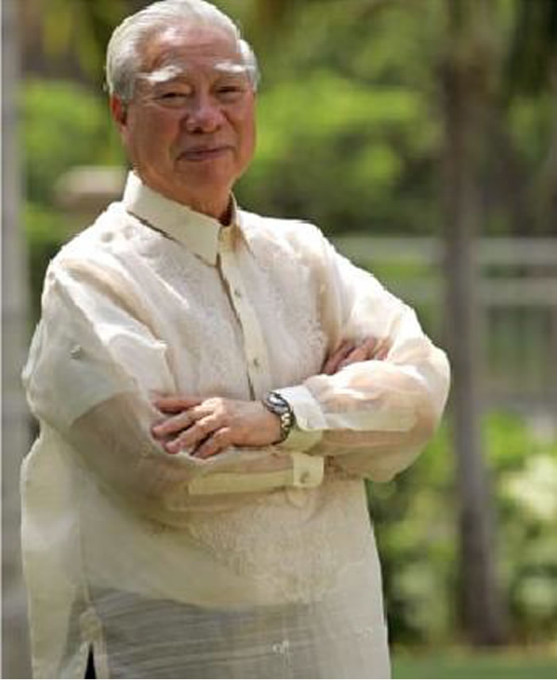

<div data-page="late-chairman" class="page history" data-pageColor="#012d68" data-category="history">
    <div class="page-content">
        <div class="main">
            <div class="tag-title">
                <h1>HISTORY</h1>
            </div>
            <div class="row">
                <div class="col-100">
                    <p class="desc">In 1995, Mr. Andrew L. Gotianun, Sr., the late Chairman Emeritus of Filinvest Development Corporation,
                        engaged into an ambitious endeavor to transform the underutilized stock
                        <span class="coloredText">farm</span> into a
                        <span class="coloredText">model of urban development
                        </span>
                    </p>
                </div>

                <div class="col-40">
                    
                </div>
                <div class="col-60">
                    <p class="desc">"Our vision for Filinvest City is a total and complete environment conductive to meeting the demands
                        of the new global business setting, enriching the lives of those working and residing in the city,
                        and inspiring new generations to come."</p>

                    <div class="col-70">
                        <span>Andrew L. Gotianun, Sr.</span>
                        <br>
                        <span>Late Chairman Emeritus</span>
                        <br>
                        <span>Filinvest Development Corporation</span>
                    </div>
                </div>
            </div>
        </div>
    </div>
</div>